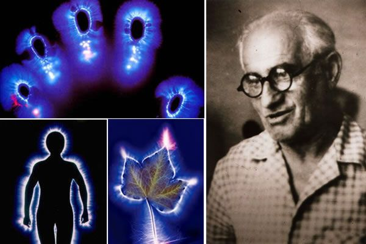
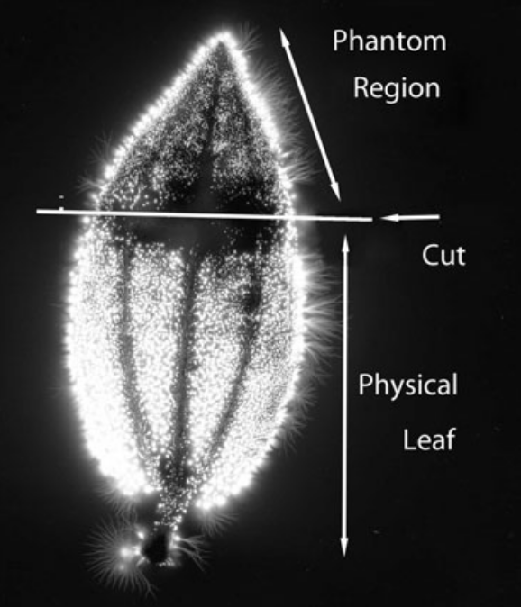

Índice
O Efeito Folha Fantasma
Antes de mais nada, precisamos falar sobre Fotografia Kirlian que é uma técnica descoberta acidentalmente pelo pesquisador russo Dr. Semyon Kirlian em 1939. Ele notou que se você colocar um objeto em uma chapa fotográfica e conectar o objeto a uma fonte de alta tensão,uma imagem é produzida.
As fotos produzidas a partir desta técnica são enigmáticas porque nos permitem ver coisas que são aparentemente contraditório com a forma como vemos o mundo. O exemplo mais notável disso é o Efeito Folha Fantasma.
Quando você pega uma folha recém-cortada de uma árvore, arranca uma parte dela e tira uma foto Kirlian dela. Você ainda pode ver a parte da folha que você removeu!
Você precisa tirar a foto minutos depois de cortar a folha, e a folha deve estar fresca, saudável e cheia de vida. Mas mesmo assim, esse fenômeno ocorre apenas algumas vezes: a taxa de replicação bem-sucedida está entre 1% e 70% dependendo do pesquisador. Isso não deveria ser tão surpreendente, já que não temos ideia do mecanismo por trás do efeito folha fantasma. No devido tempo, vamos entendê-lo melhor.
O artigo da Wikipedia sobre o efeito da folha fantasma afirma que isso acontece devido à umidade residual [1] se você colocar sua folha no eletrodo antes de você cortar, vai deixar uma pegada de umidade, que é o que essas fotos mostram. Se você limpar o eletrodo da umidade antes de tirar a segunda fotografia, não haverá mais efeito de folha fantasma!
Isso parece convincente e provavelmente desencorajou a maioria de pesquisar mais sobre isso, mas é pior do que enganoso, é uma mentira ridícula. Dr. Kirlian usou a metodologia defeituosa descrita em um experimento na década de 1940, mas literalmente todas as repetições desde então não pode ser explicado com umidade. É chocante que uma falsidade tão óbvia possa permanecer na Wikipedia depois de tanto tempo.
Eu até encontrei um garoto de 13 anos eviscerando a explicação da Wikipedia com uma replicação do projeto da feira de ciências [2]
![[2]](tornleaf.png){kind=link}
Replicações:
Enquanto pesquisava este artigo, perdi a conta da quantidade de replicações que vi mencionadas, mas é algo em torno de 20. A replicação da mais alta qualidade [3] é o experimento abrangente de John Hubacher, no qual 137 folhas de 14 espécies de plantas foram submetidos a cortes.
96 folhas exibiu o efeito de folha fantasma.41 folhas não. Quase todos os fantasmas eram claros, inequívocos e de alta qualidade, assemelhando-se muito às folhas originais em detalhes.
Não houve nenhum parâmetro significativo que pudesse ser vinculado às 41 folhas que não exibiram uma imagem fantasma. Observe as duas fotos acima. Ambos são a mesma folha, mas a foto da direita é DEPOIS que essa parte foi cortada e como você vê, partes delicadas da anatomia permanecem intactas. Umidade..ridículo.
Antigamente na Rússia, a fotografia Kirlian era usada medicamente, como uma ferramenta de diagnóstico. Foi dito que também poderia prever problemas de saúde antes que eles se manifestassem.

Como fazer isso:
Membros Fantasmas:
Mais de 80% dos amputados experimentam sensações de seu membro amputado, mesmo que ele não exista mais. Sentimentos comuns são coceira e dor. A explicação comumente aceita é que as terminações nervosas expostas estão sendo estimuladas.Esta é uma explicação insatisfóriajá que um membro fantasma pode ser sentido décadas depois de ter sido perdido, muito depois de as terminações nervosas terem cicatrizado.
Existem pelo menos dois relatos de pessoas que viram o efeito folha fantasma em humanos amputados [4],[5] quando fotografados, ambos comentando que só era possível fotografar durante a dor fantasma.
Mais fotos legais de Kirlian:
É fácil ler muito nessas fotos. A maioria das ideias malucas não vai dar certo, mas definitivamente há muito a ser encontrado no mundo da fotografia Kirlian.
Referências
- [1] Wikipedia "Debunk" of The Phantom Leaf Effect
- [2] 7th Grade Science Fair Project: Phantom Leaf Replication
- [3] The Phantom Leaf Effect: Replication
- [4] The Phantom Leaf Effect and Its Implications for Near-Death and Out-of-Body Experiences
- [5] The Kirlian Aura (Dr. Worsley, page 165)
- [6] The Phantom Leaf Effect and Its Implications for Near-Death and Out-of-Body Experiences, Reference to Joanne Cusack
- [7] The Kirlian Aura (PDF)
- [8] Phantom Limb Pain: Subtly Energy Perspectives